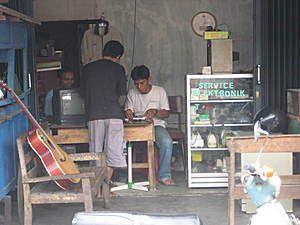
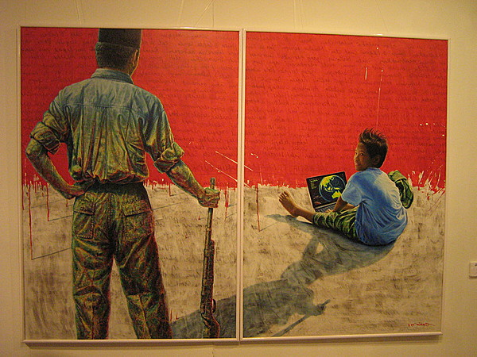

printable page
printable page
printable page
printable page
L'Internet, arrivato in Indonesia all'inizio della crisi degli anni 1990 e dopo trent'anni di dittatura, si e' affermata economicamente e politicamente come un mezzo al di fuori del controllo dello stato1
Quando il dittatore Suharto fu costretto ad abdicare nel Maggio 1998, alcuni giornalisti hanno tracciato un parallelo tra questo evento e la presenza in rete del movimento Zapatista del Chiapas2, implicando che la rivoluzione indonesiana fosse facilitata se non addirittura guidata dalla rete (Internet) 3
1. Hill D. and Sen K. (2000) "The Internet in Indonesia's New Democracy"
2. Basuki T. (1998) "Indonesia: The Web as a Weapon", Development Dialogue 2: The Southeast Asian Media in a Time of Crisis
3. Marcus, D. L. (1999). "Indonesia Revolt Was Net Driven"
Mentre l'organizzazione statale dei telefoni pubblici (Warung) esisteva gia' in altri tempi e spazi, il paradigma degli Internet Cafe (Warnet) ha rapidamente gettato le basi per la sua espansione quasi simultanea attraverso l'intero tessuto sociale. [...] I nodi del cyber-spazio nello spazio reale - Warnets ben simili ai Warung - hanno creato una rete cosi' potente, nel caso dell'Indonesia alla fine del ventesimo secolo, da essere piu' dinamica di quella dello stato, dell'economia e delle corporazioni. 1
1. Merlyna Lim (2003) The Internet, Social Network and Reform in Indonesia

Il sociologo Castells si riferisce a questo fenomeno come alla "preminenza nel contesto sociale della morfologia sull'azione", una preminenza che e' la caratteristica principale delle societa' in rete.
L'anno 2005 ha portato ad uno sviluppo significativo dell'infrastruttura telematica in Indonesia: incentivi allo sviluppo uniforme sul territorio.

Il Summit Mondiale sulla Societa' dell'Informazione (WSIS) nel Dicembre 2003 ha guidato un'impatto significativo sul piano di regolamentazione statale affinche' l'Indonesia raggiungesse l'obiettivo di connettere almeno la meta' della popolazione ad Internet entro il 2015.
La maggior parte delle implementazioni ad oggi sono basate su comunita' auto-organizzate che ricevono minimi aiuti esterni, incluso il supporto del governo. Di seguito le piu' rilevanti1:
- http://www.groups.or.id: forum liberi in rete: nel 2004 da spazio a piu' di 2005 gruppi di discussione con piu' di 65.000 partecipanti
- http://www.ilmukomputer.com: pubblica manuali e saperi liberi che riguardano l'informatica, sostenuto dai suoi stessi associati.
- http://www.voipmerdeka.net: la "Rebelnet" che da servizi di telefonia in rete (VoIP) liberi al popolo indonesiano: una delle piu' larghe reti VoIP del mondo
1. cfr. Onno W. Purbo, professore all'Istituto di Tecnologia di Bangung
Maggiori liberta': il 5 gennaio 2005 un atto del ministero libera l'uso delle frequenze wireless 2.4Ghz senza bisogno di alcuna licenza, in seguito a svariati raid delle forze dell'ordine ed estenuanti dibattiti pubblici ed al governo.
Minori liberta': a meta' del 2005 numerosi poliziotti irrompono negli Internet cafe' (Warnet) di svariate citta' sequestrando computers, arrestandone gli operatori ed i proprietari per un'operazione contro la pirateria del software.
Il progressivo avanzamento delle economie corporative suscita preoccupazioni. Questo nuovo gigante accentratore puo' depauperare gli scambi online dalle originarie valenze politiche: plasmando la societa' secondo la logica del consumo e delle grandi firme. Di conseguenza l'Internet diverra' un media neutrale ed omogeneo, la cui funziona sara' unicamente appiattita al commercio e alla pubblicita' di beni consumistici. 1

Passando l'egemonia dallo stato alle corporazioni l'Internet diviene il passaggio attraverso il quale gli interessi privati invadoni la sfera pubblica. 2
1. Merlyna Lim (2003) "The Internet, Social Network and Reform in Indonesia"
2. Juergen Habermas (1991) "The Structural Transformation of the Public Sphere: An Inquiry into a Category of Bourgeois Society", MIT Press.
Alcune organizzazioni umanitarie acquisiscono un ruolo prominente nel compilare le mappe della violenza e dell'ingiustizia:
- Kontras: Spazio per solidarieta' e giustizia in favore di vittime
- IKOHI: Commissione per gli scomparsi e le vittime di violenza
- YPKP: Istituto Indonesiano per lo studio del massacro del 1965/1966

La diffusione di tecniche dei media locativi e tecnologie di mappatura apre la possibilita' di completare documentazioni storiche, approfondendo di conseguenza l'importanza di tali tecnologie.

Pagina web di Jaromil http://jaromil.dyne.org
Diario indonesiano su http://jaromil.dyne.org/journal/indonesia.html
Si ringrazia NLNET per aver supportato questa ricerca.
Selamat jalan!

|


|


|
 copyleft 2000 - 2009 dyne.org
foundation and respective authors. Verbatim copying
and distribution is permitted in any medium, provided
this notice is preserved.
Send inquiries & questions to dyne.org's hackers. copyleft 2000 - 2009 dyne.org
foundation and respective authors. Verbatim copying
and distribution is permitted in any medium, provided
this notice is preserved.
Send inquiries & questions to dyne.org's hackers.
|

|